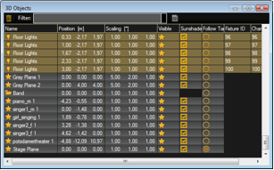
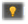
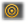

This view offers information about all used objects in a grid view. All used 3D objects and fixtures are listed in this grid. Single or multiple objects can be selected for manipulation or duplicating. The objects can be sorted by a left mouse click into the headline of a column.
The symbols inside the grid have the following meanings:
| Name | Meaning |
|---|---|
| 3D object | |
|  | Fixture object |
| Grouping object |
| Property | Meaning |
|---|---|
| Object is visible or hidden in Stage View | |
| Sunshade is on or off | |
|  | Followspot is active or inactive on object surface |